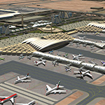
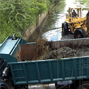

Parish: Trelawny
Total # of Projects: 2
Current Projects:
Port Expansion
Hector's River Project
Parish: St. James
Total # of Projects: 4
Sangster Intl. Airport Expansion
Urban Renewal Project
Road fixing
Drain Cleaning